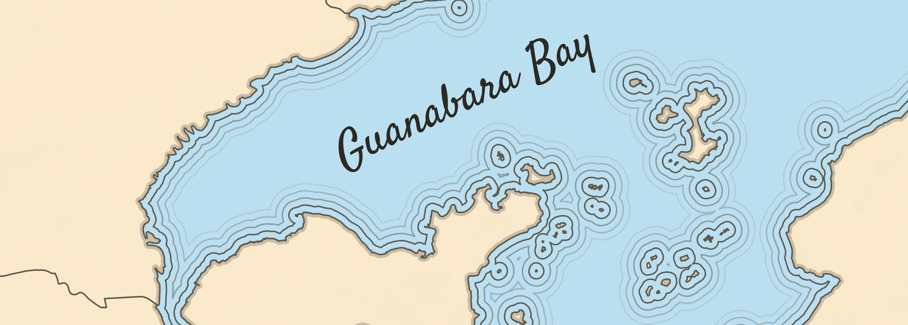
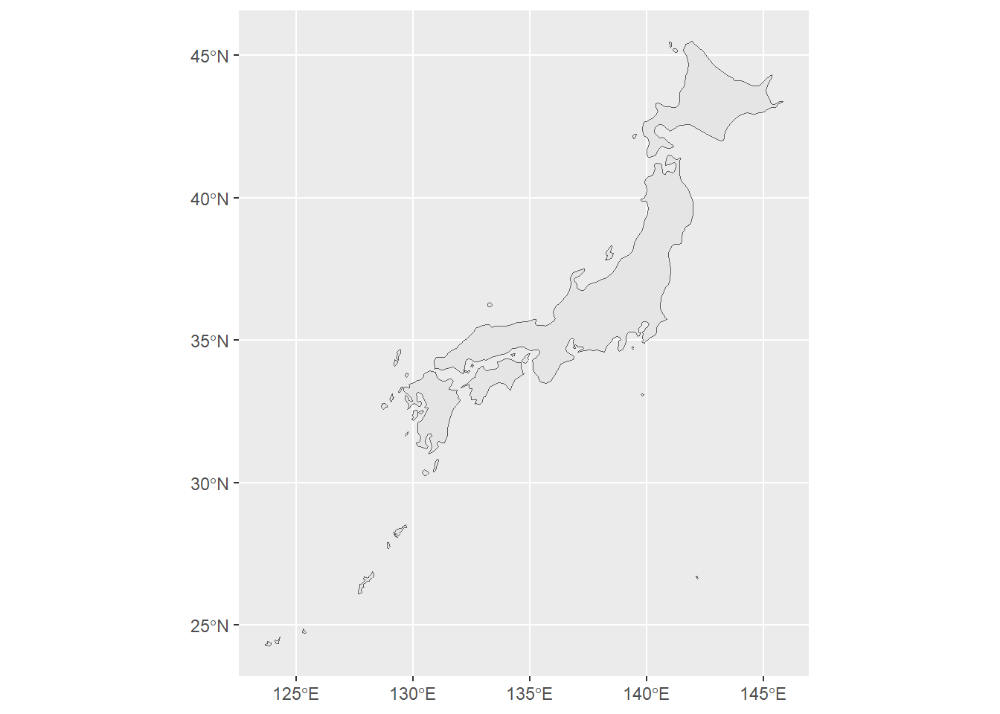
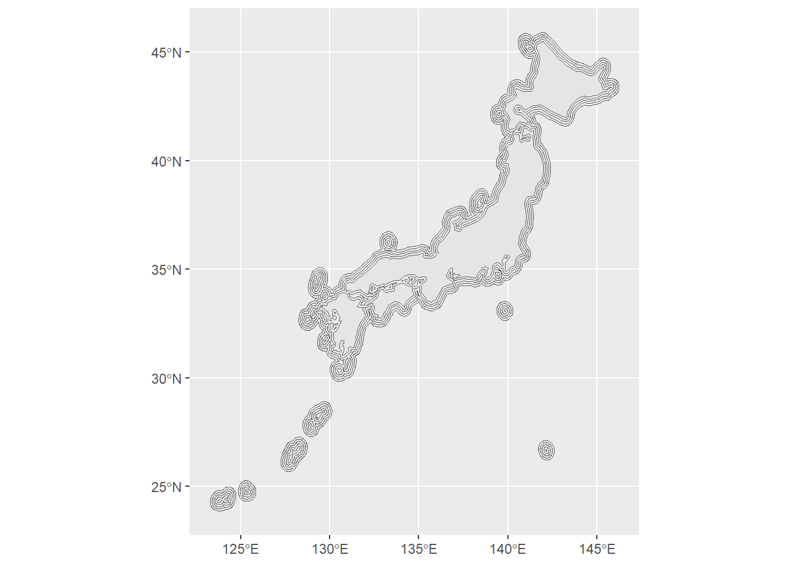
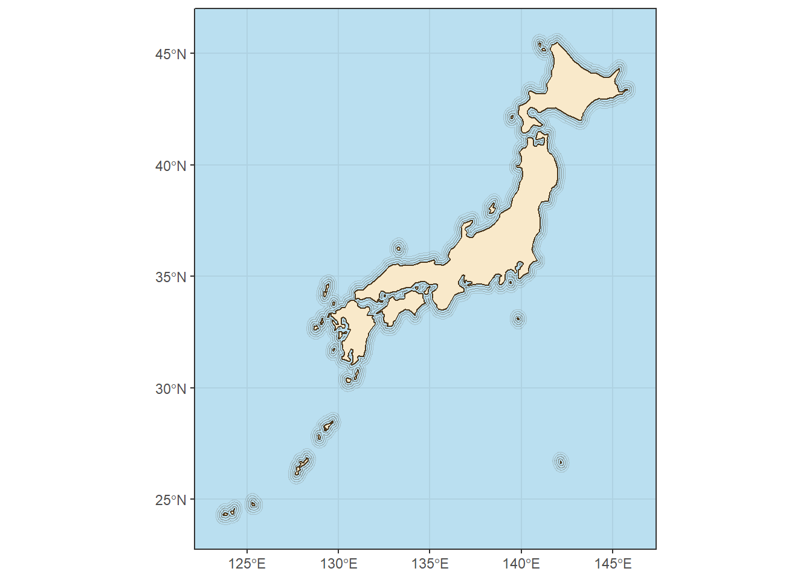

# Packages
library(dplyr) #pipe and basics
library(ggplot2) #plotting
library(sf) #working with maps
library(rnaturalearth) #get countries shapefilesDrawing waterlines with ggplot2 in R
ggplot2
dataviz
maps
Learn how to easily create these awesome waterlines

Motivation

Last week I saw that Thomas Lin Pedersen (currently responsible for ggplot2) has started developing a new package called boundaries. It did not take me much effort to understand the main function of the package, because this amazing hex logo explains it very well, to create waterlines from boudaries!
But this is a package from the new euclid ecosystem, which aims to “provide a new unified foundation for computational geometry in R”. Awesome, but at that moment I wanted to know if I could create the waterlines for any shapefile I find on my computer, and the boundaries package doesn’t support sf objects, which I use to create maps…
And so, like a good Ph.D. student, I began a saga of Google and StackOverFlow searches to find the answers I was looking for. Coincidentally, on the same day (!), I came across Olivia Vane’s tweet about her talk at Observable Insight 2022, where she teaches drawing waterlines with code, but using D3.js.
Her article about waterlines is great and explains all the context behind this visualization. I highly recommend reading it!
But the topic was hot, and I already had an idea how to use waterlines: Re-create an old map of the Brazilian coast!
Then I discovered that there is a way to create waterlines using the sf and ggplot2 packages! So I created this text as a guide for the next people who need it! Today I will try to present a basic version for everyone to understand the idea and create their own amazing maps!
Look how my map turned out!
Creating our map
We need a map with some water masses. Since my girlfriend is of Japanese descent, I will use today’s post to thank this culture for providing me with sushi, lamen, yakisoba, anime, and a lot of knowledge and respect!
Let’s load the necessary packages, I’ll talk about them during the text.
If you have questions about a function, just click on its name to go to the package page!
Now we need the map of Japan. Good thing we have the rnaturalearth package!
japan_map <- rnaturalearth::ne_countries(country = "Japan", #country name
scale = "medium", #map resolution
returnclass = "sf" #object class
)We can check out the map we just downloaded
japan_map %>%
ggplot()+
geom_sf()
Important
Since the next process requires some geometry calculations, we will tell the sf package not to use the s2 package, as this can lead to errors.
sf::sf_use_s2(FALSE)#> Spherical geometry (s2) switched offAll done, now we just need to create the waterlines! We will use the st_buffer function from the sf package, as the name says, it calculates a buffer around the geometry, which is exactly what we need! Each line of code is a waterline, add as many as you like!
After executing each line you will get a warning. Don’t worry, it will work!
japan_buffer1 <- sf::st_buffer(japan_map, dist = 0.1)
japan_buffer2 <- sf::st_buffer(japan_map, dist = 0.2)
japan_buffer3 <- sf::st_buffer(japan_map, dist = 0.3)
japan_buffer4 <- sf::st_buffer(japan_map, dist = 0.4)
#> Warning: st_buffer does not correctly buffer longitude/latitude datadist is assumed to be in decimal degrees (arc_degrees).Now we can plot it!
japan_map %>%
ggplot()+
geom_sf()+
geom_sf(data = japan_buffer1, fill = NA)+
geom_sf(data = japan_buffer2, fill = NA)+
geom_sf(data = japan_buffer3, fill = NA)+
geom_sf(data = japan_buffer4, fill = NA)
Let’s add some details and make this map even cooler!
japan_map %>%
ggplot()+
geom_sf(fill = "#f9e9ca",
color = "#48351c",
linewidth = 0.4)+
geom_sf(data = japan_buffer1,
fill = NA,
color = "#48351c90")+
geom_sf(data = japan_buffer2,
fill = NA,
color = "#48351c70")+
geom_sf(data = japan_buffer3,
fill = NA,
color = "#48351c50")+
geom_sf(data = japan_buffer4,
fill = NA,
color = "#48351c30")+
theme_bw()+
theme(
panel.background = element_rect(fill = "#badff0"),
panel.grid = element_line(color = "#afd2e2")
)+
coord_sf(clip = "off")
Awesome! I hope you enjoyed this tutorial. I would like to thanks Olivia Vane, Maya Gans and Georgios Karamanis for the inspiration and tips for this post!
Share it with your friends and send me your maps with waterlines!
Don’t forget to take a look at my Charts page!
Expand for Session Info
─ Session info ───────────────────────────────────────────────────────────────
setting value
version R version 4.3.1 (2023-06-16 ucrt)
os Windows 11 x64 (build 22621)
system x86_64, mingw32
ui RTerm
language (EN)
collate Portuguese_Brazil.utf8
ctype Portuguese_Brazil.utf8
tz America/Sao_Paulo
date 2024-02-23
pandoc 3.1.1 @ C:/Program Files/RStudio/resources/app/bin/quarto/bin/tools/ (via rmarkdown)
─ Packages ───────────────────────────────────────────────────────────────────
package * version date (UTC) lib source
dplyr * 1.1.3 2023-09-03 [1] CRAN (R 4.3.2)
ggplot2 * 3.5.0.9000 2024-02-23 [1] Github (tidyverse/ggplot2@e8a388e)
rnaturalearth * 1.0.1 2023-12-15 [1] CRAN (R 4.3.2)
sessioninfo * 1.2.2 2021-12-06 [1] CRAN (R 4.3.2)
sf * 1.0-14 2023-07-11 [1] CRAN (R 4.3.2)
[1] C:/Users/Bruno Mioto/AppData/Local/R/win-library/4.3
[2] C:/Program Files/R/R-4.3.1/library
──────────────────────────────────────────────────────────────────────────────